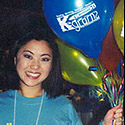
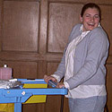
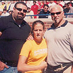
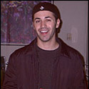

|
2001-2002
Group Liaisons!
|
|
2001-2002
Group Liaisons!
|
|
David Besedich,
Cultural Group Liaison Favorite Cartoon
Character - Batman |
|
|
 |
Cheryl Cheok,
Cultural
Group Liaison Favorite Cartoon Character -
Scooby Doo |
|
Sara
Grady,
Performance & Media Group Liaison Favorite Cartoon
Character - Dimitri from "Anastasia" |
 |
|
|
Lynne Gratz,
Service Group Liaison Favorite Cartoon
Character - Mickey Mouse |
|
Laura
Haas,
Service Group Liaison Favorite Cartoon
Character - Tweety Bird |
|
|
|
Katie
Herta,
Greek Group Liaison Favorite Cartoon
Character - She-Ra |
|
Matthew Kittle,
Academic
Group Liaison Favorite Cartoon Character -
Voltron |
|
Kristen Klanow,
Government & Political Group Liaison Favorite Cartoon Character -
Bugs Bunny |
|
Jessica Rose,
Athletic
Group Liaison Favorite Cartoon Character -
Tom, from Tom and Jerry. I wish he would catch Jerry! |
 |
|
 |
Matt
Sporer,
Academic Group Liaison Favorite Cartoon Character -
Bugs Bunny |
|
Tina Wung,
Student Group Liaison Favorite Cartoon Character -
|
|
|
| About
K-grams | Pen Pal
& Swing Kid Info | Halls
& Schools | Kids-Fair
| BookMARK | Special
Programs | SmilePC |
Guestbook Comments about this webpage can be directed to our webmasters (smileweb@umich.edu) All other comments or questions can be sent to smile@umich.edu |